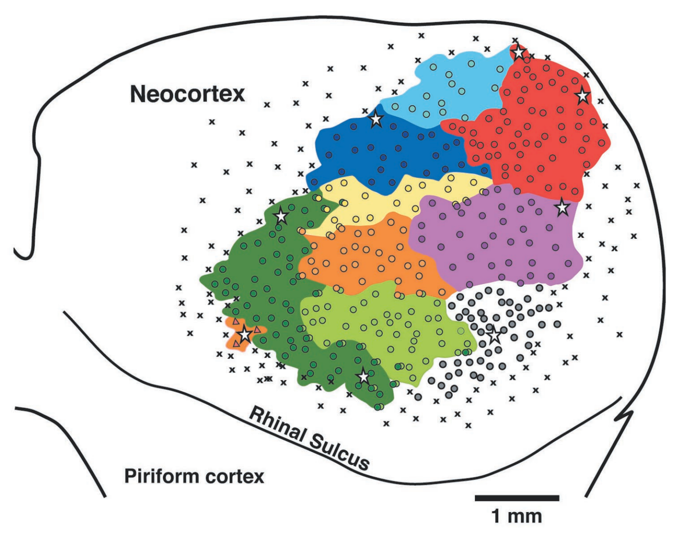
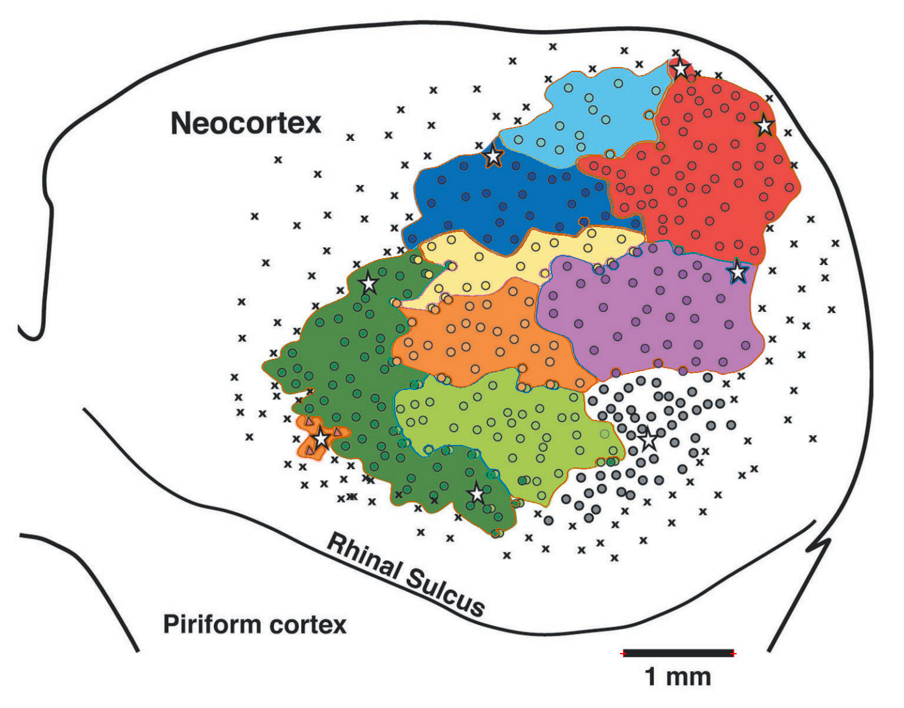
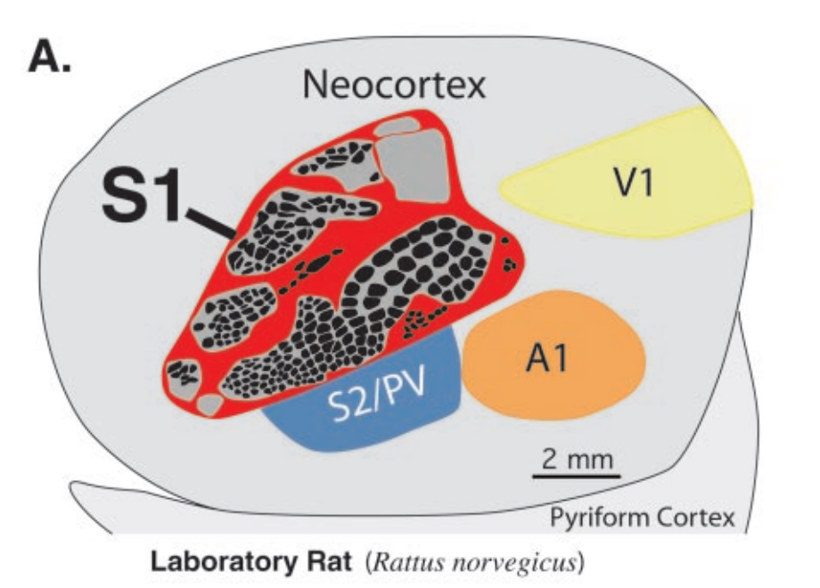
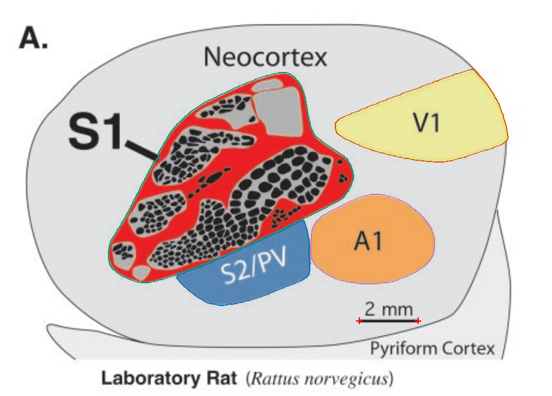
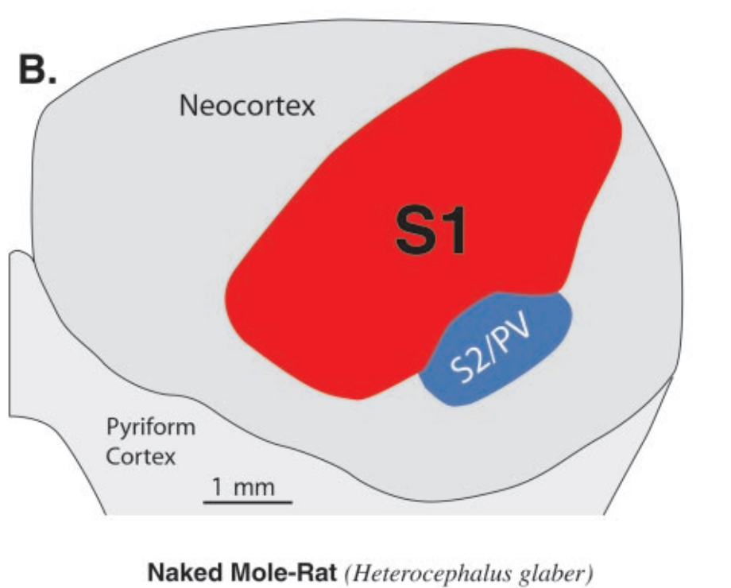
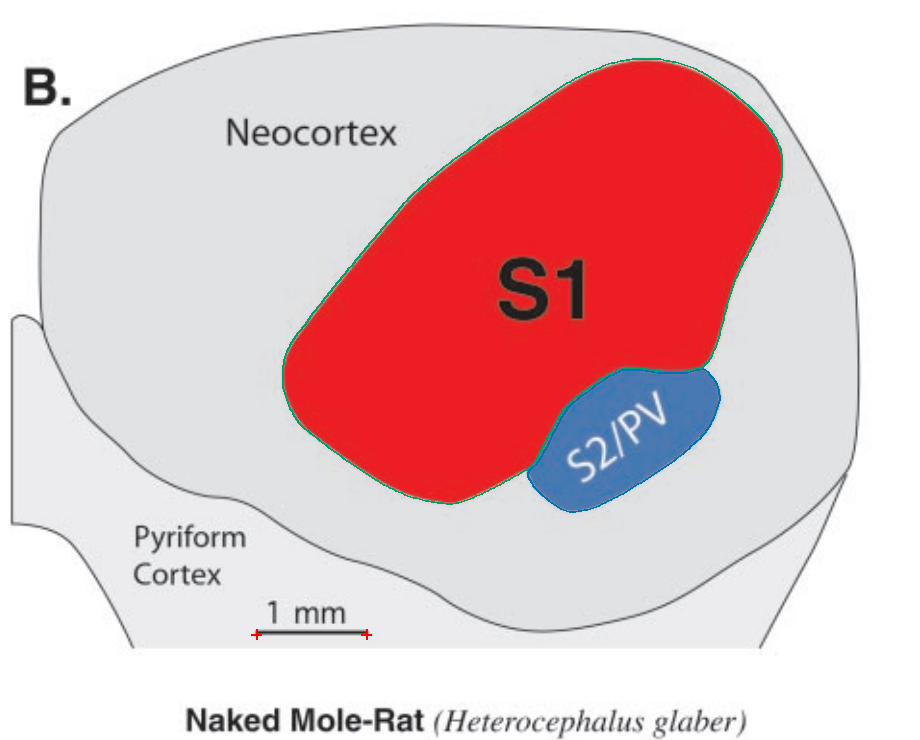
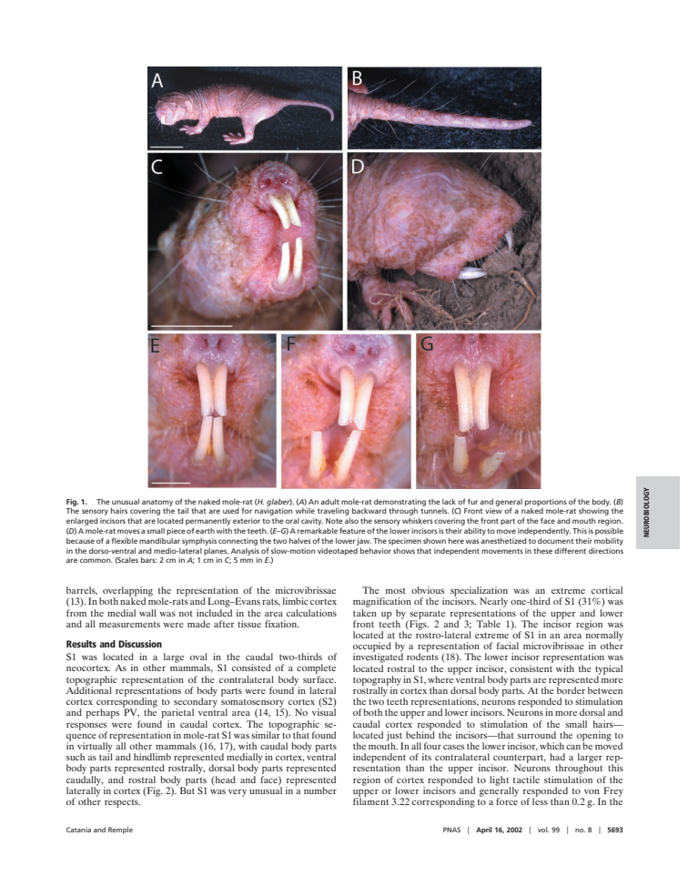
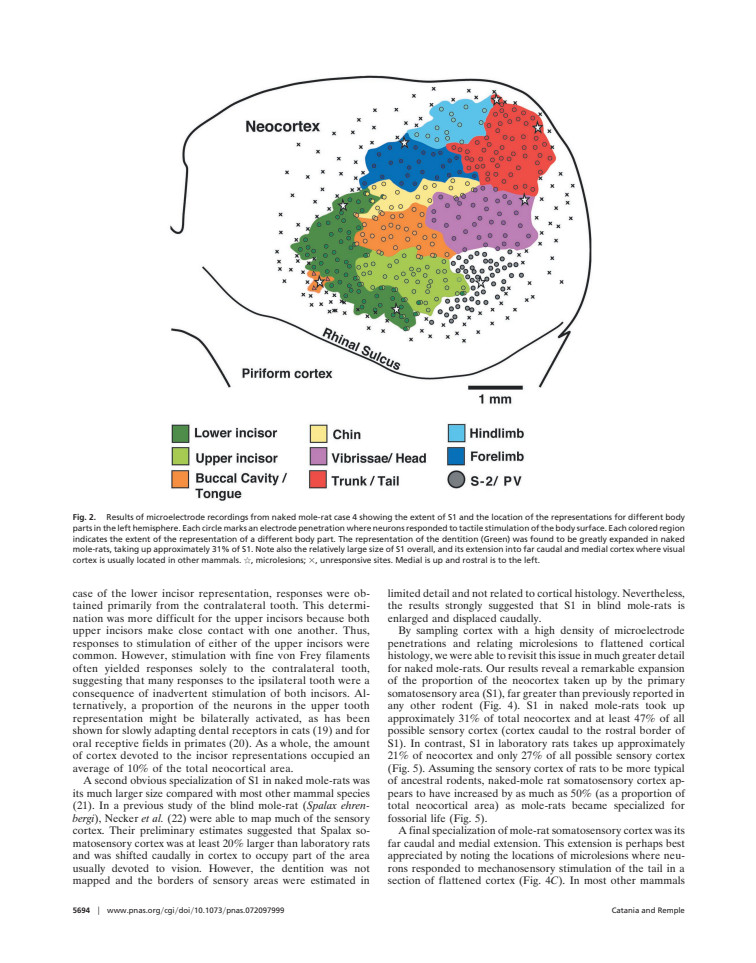
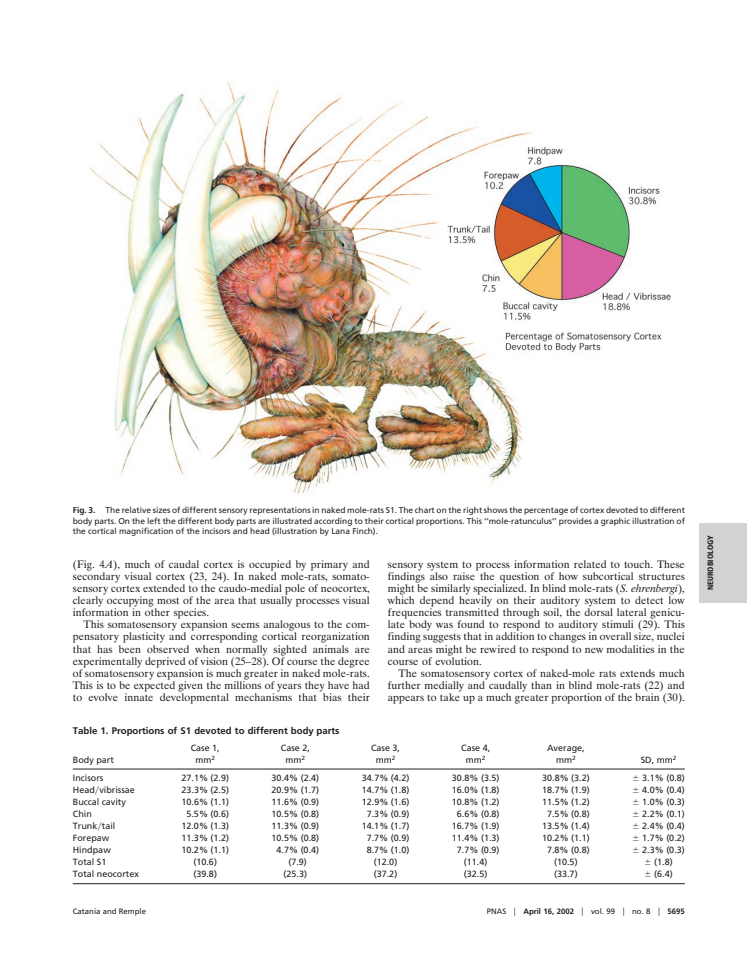
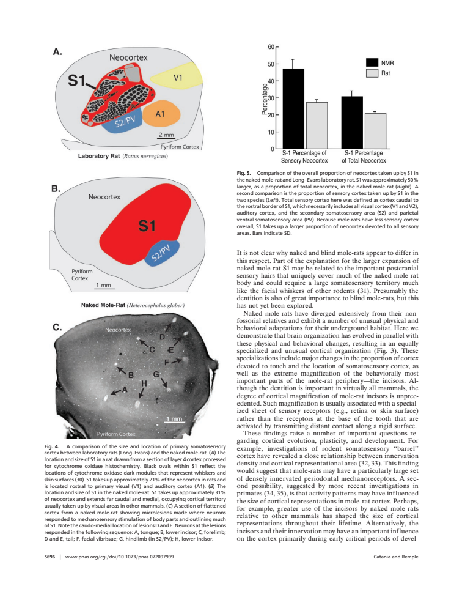

Source image, saved anatomical outlines and scale endpoints. Unfinished fields are NA.
Provisional digitization; inspect anatomical boundaries.


| Field | mm² | % neocortex | Status |
|---|---|---|---|
| S1_lower_incisor | 2.146 | NA | provisional; anatomical review required |
| S1_upper_incisor | 1.424 | NA | provisional; anatomical review required |
| S1_buccal_cavity_tongue | 1.110 | NA | provisional; anatomical review required |
| S1_chin | 0.678 | NA | provisional; anatomical review required |
| S1_hindlimb | 0.871 | NA | provisional; anatomical review required |
| S1_forelimb | 1.221 | NA | provisional; anatomical review required |
| S1_trunk_tail | 1.982 | NA | provisional; anatomical review required |
| S1_vibrissae_head | 1.868 | NA | provisional; anatomical review required |
| S1 | 11.584 | NA | provisional; anatomical review required |
| S2/PV | NA | NA | not_measurable |
| whole_neocortex | NA | NA | not_measurable |
Provisional digitization; inspect anatomical boundaries.


| Field | mm² | % neocortex | Status |
|---|---|---|---|
| S1 | 34.192 | NA | provisional; anatomical review required |
| S2/PV | 7.036 | NA | provisional; anatomical review required |
| V1 | 11.826 | NA | provisional; anatomical review required |
| A1 | 9.990 | NA | provisional; anatomical review required |
Provisional digitization; inspect anatomical boundaries.


| Field | mm² | % neocortex | Status |
|---|---|---|---|
| S1 | 10.982 | NA | provisional; anatomical review required |
| S2/PV | 1.417 | NA | provisional; anatomical review required |
Figure 2 is case 4: eight somatotopic compartments and their S1 union. Compartments and the union are non-additive. Figure 4A/B are comparative drawings with local 2 mm and 1 mm bars; they are not extra identified animals. Recording dots do not establish a closed S2/PV border in figure 2. Figure 4C is a section photograph with lesion sites, without an independently closed areal perimeter.
Source-toggle precision review · Field inventory
External animal anatomy photographs, not cortical surfaces.

1 measured view(s), 9 field/component observations; 0 boundaries remain NA for anatomical review. Illustrative, partial, repeated and unscaled restrictions apply.

Animal drawing and pie chart; not cortical-field geometry.

2 measured view(s), 6 field/component observations; 0 boundaries remain NA for anatomical review. Illustrative, partial, repeated and unscaled restrictions apply. Panels A/B are measured. C is a flattened-section photograph with lesion markers but no independently closed field perimeter.

Bar chart of reported area proportions; no independently traceable field geometry.